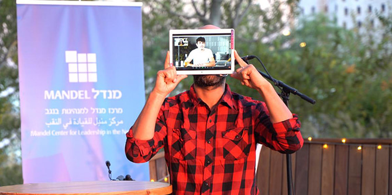
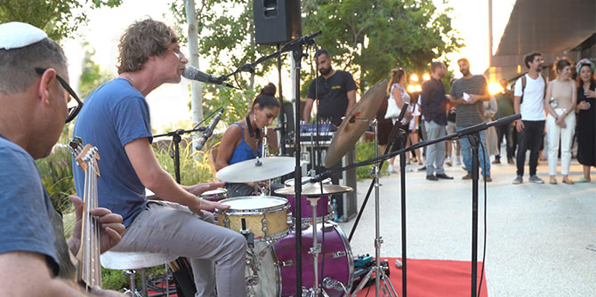

שחקן במופע (תמונה: קמילה בצ'ינס)
האירוע "תרבות בתנועה", שציין את סיום מחזור ד' של תוכנית מנדל למנהיגות תרבות בנגב, הפנה זרקור אל הזיקה בין אמנות לטכנולוגיה ונתן ביטוי לפוטנציאל הגלום בשיתופי פעולה, במפגשים יצירתיים ובחלומות על אופקים חדשים עבור הנגב.
עבודות האמנות שיצרו והציגו העמיתות והעמיתים עסקו ביחסים שבין הזהות הנגבית המסורתית, המיוצגת בתודעה הישראלית על-ידי המדבר, לבין הזהות הפוטנציאלית החדשה, המבקשת להיות מזוהה עם חדשנות, סייבר וקדמה.

מופע מוזיקלי (תמונה: קמילה בצ'ינס)
בין המיצגים היו קולקציה של אופנה א-בינרית שעוצבה בהשראת הג'לביה המסורתית, שיח כוכיה שגלגולו בכבישי הנגב נעצר כדי להפוך לתכשיט גדול ממדים, דלת מכנית שהובילה לתוך אשליה מדברית, דיאלוג בין שירה בדואית עתיקה לצ'לו, וסדרת פורטרטים גדולי-ממדים שהנכיחה את מבטה של האישה הבדואית. נוסף על אלו נערכו גם מופע תיאטרון היברידי ("דייטולוגי טכנולוגי"), מופעים מוזיקליים ומופעי ספוקן וורד.
"הסוגייה שהקבוצה בחרה לשים עליה זרקור היום קשורה לשינוי האופנים שהנגב מקודד בתוך התודעה הישראלית", אמרה ד"ר חגית דמרי, מנהלת תוכנית מנדל למנהיגות תרבות בנגב בפתיחת האירוע. "חמישה-עשר המופלאים והמופלאות שיש להם אהבה גדולה לנגב ומחויבים לשינוי ולשיפור המציאות בנגב".
שיחות בין עמיתות ובוגרים (תמונה: קמילה בצ'ינס)
"זה אירוע מרגש למנהיגות עתידית בנגב", אמר פאיז אבו סהיבאן, ראש עיריית רהט. "אני שם את הדגש על שיתוף הפעולה הפורה בין בדואים ליהודים פה."
"והנה כבר מחזור רביעי שמסיים את התוכנית, שכולם ביחד רוצים לחשוב איך המקום הזה משמעותי יותר לכולנו", אמרה ד"ר עדי ניר-שגיא, מנהלת מרכז מנדל למנהיגות בנגב.
האירוע התקיים בפארק ההייטק גב-ים נגב שבבאר שבע, והבחירתם של העמיתות והעמיתים לפעול במרחב הציבורי הייתה בבחינת הזמנה לתושבי האזור להגיע, לחוות, לחשוב ולקחת חלק בשיחה הגדולה על עתידו של הנגב.
{kind=link}
{kind=link}
{kind=link}